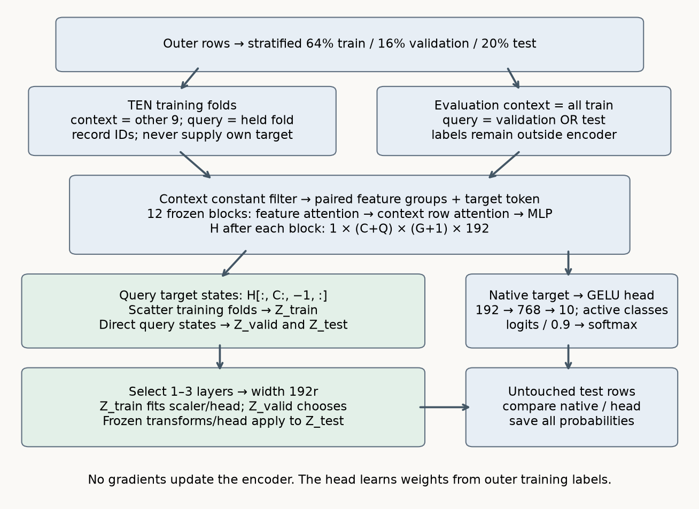

Query embeddings: information and selection card

Operation card¶
- Split outer train/validation/test IDs. Save them before extraction.
- Ten folds within outer training. Other nine folds supply known targets; held fold supplies features only.
- Capture every complete block output H, shape 1×(C+Q)×(G+1)×192. Select H[:,C:,-1,:].
- Scatter Q×12×192 vectors to original training positions.
- Validation/test use query role with all outer training rows as context. Their labels never enter extraction.
- Concatenate one to three distinct one-based layers; width 192r. Fit scaler and logistic head on training vectors only.
- Select from 298 layer subsets ×3 C values by validation accuracy, then fewer layers/smaller C/lexicographic ties. Test is untouched until scoring.
Critical distinctions¶
Frozen weights can consume labels during conditioning. Context states contain own-label information; query states must be generated without it. Role matching is not identical context distribution: training vectors see about 90% support, evaluation vectors see all training support. Cross-fitting does not make fitted head training scores unbiased. An attention mask does not ensure wrapper query independence when preprocessing inspects all supplied rows.
The 2.0.9 get_embeddings X argument supplies query rows even for data_source='train'; the selector returns context states. One call is not cross-fitting. Layer labels refer to complete block outputs, before the native head.
Evidence boundaries¶
Paper §6 and Appendix Table 10 · Fresh local predictions · Actual source extraction checks · Source inventory · Paper table audit · Reproduction contract.
The new local experiment includes full historical pretrained layers, ten-fold extraction and exhaustive validation-selected combinations. The original 29-task benchmark is NOT_RUN; local results are INCOMPARABLE to its published average ranks. Historical three-fold/final-layer/context-average evidence remains unchanged in _verify_l065_results.json.